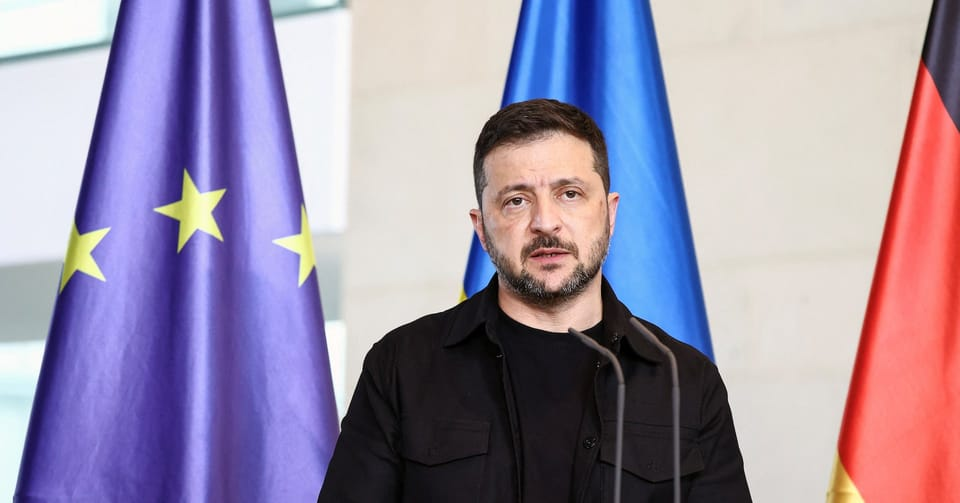

世界苦茶11月04日新闻 | 32条 | 中国延长对部分国家免签政策并增加瑞典

中国延长对部分国家免签政策并增加瑞典 | 星巴克将其业务卖给中国 | 特朗普的关税案进入关键周期 | 捷克民粹主义总理与极右翼党形成执政联盟
苦茶数据
美元兑人民币：7.12（昨日7.12，前日7.11）
美元兑日元：154.07（昨日154.04，前日153.95）
上证指数：3964s（昨日3976，前日3954)
标普500指数：6851（昨日6840，前日6822）
比特币：106649（昨日107506，前日110206）
布伦特原油：64.70（昨日64.77，前日64.60）
中国新闻
• 关于对中国学者恐吓的指控已被移交给反恐警察。
一项针对谢菲尔德哈勒姆大学遭中国持续施压以关闭人权研究指控的调查已移交反恐警察处置。BBC和卫报报道，文件显示中国发起了一场为期两年的恐吓和骚扰行动，包括要求该校停止一位教授关于中国新疆地区强迫劳动指控的敏感研究。南约克郡警察发言人表示，警方已将此案移交处理，因为“相关指控属于《国家安全法》第3条”。《国家安全法》第3条涉及“帮助外国情报机构”。如果某人的行为“旨在实质性协助外国情报机构开展与英国相关活动”，或其行为可能协助该机构，则构成犯罪。谢菲尔德哈勒姆大学的内部文件在劳拉·墨菲教授提出的主体访问请求下被披露，墨菲教授的研究据称是被针对的对象。
• 韩国对习近平的访问可能导致文化“禁令”解除持谨慎态度。
韩国对习近平访韩可能结束文化“禁令”保持谨慎 这位中国领导人在亚太经合组织期间的行程提高了人们对非官方抵制可能解除的期待，但官方机构呼吁保持冷静 议员金永培表示，习近平对一场拟在北京举行的韩国演出作出了积极回应，这一消息促使娱乐公司股价上涨。“我希望这将成为在解除萨德禁令之外，全面推动韩流文化前进的大门开启的时刻，”金在社交媒体上写道 2016年韩国批准部署美国的“萨德”末段高空区域防御导弹系统后，中国将其视为安全威胁，导致韩国电影，电视剧和音乐遭遇非官方抵制。据韩国国际文化交流基金会数据，该禁令使韩国娱乐企业的收入从2016年的7817.9亿美元降至次年的1355.5亿美元。
• 前支联会副主席邹幸彤申请撤销“煽颠”公诉被驳回。
前支联会副主席邹幸彤申请撤销“煽颠”公诉被驳回 2025年11月3日香港最高法院今天驳回已解散的支联会前副主席邹幸彤要求终止对其涉嫌颠覆国家政权指控进行审判的申请。前支联会3名正副主席煽颠案将于明年1月22日开庭。香港2020年实施国安法后，时任香港市民支援爱国民主联合会正丶副主席的李卓人丶何俊仁及邹幸彤次年9月被捕，被控于2020年7月1日至2021年9月8日期间，以“非法手段”煽动他人颠覆国家政权。三人已被羁押逾千日。李卓人和邹幸彤不淮保释，已被羁押1500天。何俊仁一度获淮保释七个月，已被羁押1300天。香港曾是中国境内唯一允许民众公开六四的地方。
• 比利时顶尖神经学家史蒂文·劳雷伊加盟中国杭州师范大学。
这位欧洲科学家是世界上最早使用脑成像技术研究无反应患者隐性意识的学者之一，世界知名神经学家、意识研究先驱史蒂文·洛雷斯已在中国东部浙江省接受全职高校聘任。广告 这位56岁的比利时科学家今年早些时候加入杭州师范大学，担任其基础医学院教授，校方在一份声明中表示。在赴华之前，洛雷斯在欧洲工作数十年，并曾在北美短暂任职。他被广泛认为是最早利用脑成像技术研究意识及在表面无反应患者中隐性意识的研究者之一。他合著了500多篇科学论文，获得多项奖项，包括比利时最高科学荣誉弗朗凯奖。（翻评：这个人还真不是那种退休老教授，56岁的当打之年。）
• 锡安教会金明日牧师之女呼吁中国当局释放父亲。
2025年11月3日锡安教会创始人金明日等数位牧师和教会成员于10月初遭拘留。金明日的女儿对父亲的健康表示忧心，并呼吁释放父亲。当金明日牧师的女儿格蕾丝·金·德雷塞尔数周前与父亲失联时，忧虑很快转化成恐惧——他与20多人在国家打压该地下教会时被拘留。金明日于2007年在北京成立了非官方的锡安教会。该教会成员增长到1500人，但在2018年受到有关当局压力。在新冠疫情中，锡安教会保持线上聚会，并在中国40个城市兴盛起来。今年10月10日，金明日因“涉嫌非法使用信息网络”被拘留。有关当局还在北京等城市拘押了数名牧师以及教会成员。
• 德中外长通电话 王毅呼吁柏林反对“一切台独行径”。
2025年11月3日柏林方面透露，德国外长瓦德富尔同中国外长王毅通了电话，强调稳定德中两国关系非常重要。中国外交部发布的消息显示，王毅在通话中则呼吁“经历分裂之痛的德国”充分理解和支持中国维护国家的主权和领土完整，反对一切“台独”行径。
印太新闻
• 台防长不敢保证66架美战机能如期交货。
台湾国防部长顾立雄星期一表示，台湾向美国购买的66架F-16V战机，目前有50架正在线组装，2025底前应该有10架组装完成，若测试飞行通过就可以交机。2026年应该可以看到飞机交运，但不敢打包票能全数交机。立法院外交及国防委员会星期一邀请顾立雄作报告，朝野立委关切对美军购案为何延宕，顾立雄对此作出上述回应。顾立雄星期一先接受媒体采访，指出台湾对美采购的主要武器装备有25项，有些在交运期程中，有些提前交付，但包括AGM-154C导弹、F-16VBLK70战机及MK─48重型鱼雷有延宕状况。台湾军方已对F-16V战机等三案加速履约督导，美国也成立专案办公室，都希望尽最大努力尽速完成交运。
• 马来西亚知名饶舌歌手被控吸毒。
马来西亚知名饶舌歌手Namewee被控吸毒 本地媒体周一援引吉隆坡警方消息报道，马来西亚知名饶舌歌手Namewee因非法吸毒及持有毒品被起诉。警方称，Namewee对两项指控均表示不认罪，并在上月被捕后已获保释释放。这位42岁的歌手以其讽刺性的歌曲和音乐视频而闻名，内容涉及马来西亚的禁忌话题，从猥亵、宗教到中国的审查制度。Namewee在周日的Instagram帖子中否认使用或携带毒品，“真相将在警方报告公布时水落石出，”他写道。吉隆坡警察局长法迪尔·马苏斯表示，Namewee于10月22日在一家酒店房间被捕，警方在现场发现疑似摇头丸的药丸。法迪尔在一份声明中说，Namewee后来药检呈阳性。
• 「早苗」流时尚穿搭在日本引发话题。
日本首相高市早苗在着装上会根据不同场合进行搭配。就任首相后，她经常在一天内更换多套服装，显示出根据场合进行搭配的用心。高市会亲自拎包，并经常拿起笔做笔记，这些都与历代首相不同。高市的着装、妆容及配饰等迅速在社交平台等引发话题。在9月至10月的自民党总裁选举期间，高市经常穿着据说是其尊敬的英国前首相柴契尔夫人偏爱的蓝色西装。而在10月21日就任首相后的10多天里，她的着装风格变得更为丰富多样。最具代表性的是与美国总统川普会晤的10月28日。她在一天之内至少更换了3套服装。
• 日本熊害严重，考虑让警察用步枪驱熊。
日本政府10月30日召开了有关应对「熊害」的相关内阁会议的首次会议。担任会议主席的官房长官木原稔在同一日的记者会上表示，「关于使用步枪驱除熊，已请求警方尽快采取行动」。日本环境省将在2025年度内新设立自治体雇用猎人作为职员所需的补助金。还将增迦纳入与农林水产省等一起敲定的对策方案中的措施。将加强应对熊袭人的对策。木原稔在10月30日的会议上表示，「熊害对策实施方案」将在11月中旬之前完成。「包括必要的预算措施的研究在内，希望相关部门紧密合作，切实、分阶段地实施实际效果明显的对策」。
• 美国要求联合国对7艘涉朝鲜出口的船只实施制裁。
美国要求联合国对7艘涉朝向中国出口的船只实施制裁 国务院官员称这些船只运载非法的朝鲜煤炭和铁矿石。美国将向联合国安理会委员会提出对七艘涉嫌违反联合国对朝制裁的船只实施制裁的请求，一名美国国务院官员周一表示。广告 这七艘船非法向中国出口朝鲜的煤炭和铁矿石，该官员在匿名的情况下表示，这类出口通常每年为平壤带来2亿至4亿美元收入。“这些提名不仅仅是官僚程序。它们关乎对联合国制裁违反行为追究责任，并阻止直接为朝鲜核武器和弹道导弹项目提供资金的出口，”该官员说。然而，安理会由15个成员国组成的制裁委员会以共识运作。
科技新闻
• ChatGPT 的所有者 OpenAI 与亚马逊签署了价值 380 亿美元的云计算合同。
ChatGPT 的母公司 OpenAI 与亚马逊签署了一份价值 380 亿美元的合同，以使用其云计算基础设施，此举是在这家初创公司继续签订重大合作以确保计算能力的背景下进行的。2025 年，该 ChatGPT 制造商已与甲骨文、博通、AMD 以及芯片巨头英伟达签署了总价值超过 1 万亿美元的合约。最新协议减少了其对微软的依赖。根据这份为期七年的协议，OpenAI 将获得英伟达图形处理器，用于训练其人工智能模型。此项交易发生在上周 OpenAI 的一次大规模重组之后，重组使其不再维持非营利身份，并改变了与微软的关系，赋予 OpenAI 更大的运营和财务自由度。
• 黄仁勋：不确定“习特会”是否有助于英伟达重返中国。
英伟达掌门人黄仁勋周五再次表示，他渴望让这家硅谷芯片巨头恢复向中国销售高端半导体，但他也坦言，自己并不确定美国总统特朗普与中国最高领导人习近平的会晤是否让公司离这一目标更近了一步。黄仁勋在两国领导人于上周四在韩国举行面对面峰会后不久抵达该国。特朗普向记者表示，两位领导人讨论了半导体问题，但没有提及英伟达最先进的人工智能技术。他补充说，中国官员将与英伟达讨论“购买芯片”的问题，而美国将在其中扮演“裁判”的角色。此番言论引发了外界的困惑，因为在会晤前，特朗普曾暗示他将与习近平讨论英伟达最强大的人工智能半导体，这曾引发美国可能放宽相关技术限制的猜测。
• 为什么高盛CEO不认同人工智能引发的就业恐慌。
人工智能的影子遍布Meta、亚马逊、Salesforce、YouTube及其他大型公司的大规模裁员和缩编，引发了白领岗位被AI冲击的担忧。高盛首席执行官大卫·所罗门认为，尽管AI可能削弱对办公室员工的需求，但仍有理由抱持希望。所罗门在接受CNN专访时表示，美国动态的劳动力将会像以往一样演进。所罗门在华盛顿出席高盛“1万家小企业峰会”期间向CNN表示，晚18世纪蒸汽机的发明曾带来剧烈变革，助推了第一次工业革命。“变革是不可避免的。但我坚信我们的经济非常灵活、非常有弹性。当你回顾数百年来流入社会的技术，我们会适应，”所罗门说，“我们会发现新业务，创造新工作岗位，我不相信这次会不同。
经济新闻
• 广东前三季经济增长4.1%排十强省市最后。
中国经济第一大省广东今年前三季经济增长4.1%，在经济十强省市中增速垫底。受访学者预计，广东恐怕连续三年无法实现全年增长目标。中国各省市近期陆续公布今年第三季地区生产总值数据。经济十强省市之中，除了广东外，江苏、山东、浙江、四川、河南、湖北、福建、上海和湖南这九个省市的经济增速，均跑赢或持平5.2％的全国平均线。在经济体量上，广东和江苏依然稳居前二，前三季度GDP分别为10.5万亿元和10.3万亿元，皆超过10万亿元。从外贸方面来看，广东在全国依然保持领先地位。今年前三季度，广东外贸进出口达7.02万亿元，同比增长3.8%，占全国外贸总值20.9%。
• 星巴克将中国业务60%股权出售给博裕集团。
星巴克公司将以40亿美元的价格，把其中国业务的大部分股权出售给私募股权公司博裕资本，以协助加快其咖啡店业务在中国的发展。星巴克在一份声明中称，博裕资本将通过与星巴克组建的合资企业，持有星巴克中国零售业务高达60%的股权。星巴克则保留剩余的40%股权，并继续向合资企业授权其品牌和知识产权。该协议标志着星巴克寻找合作伙伴以帮助其在中国开启新篇章的努力告一段落。星巴克于1999年在北京开设了首家门店，目前在中国拥有约8000家门店。根据声明，星巴克预计其中国零售业务总价值将超过130亿美元，包括特许经营权价值。
• 陷入困境的美联储理事丽莎·库克在特朗普称已解雇她后首次公开发言。
美联储理事丽莎·库克周一在自称被总统唐纳德·特朗普解雇后首次公开发言时表示，利率处于应对持续高通胀的良好位置。库克由前总统乔·拜登任命，是首位担任联储理事的黑人女性，也是首位遭遇解雇尝试的美联储官员。在宣布解除她职务的信中，特朗普援引了抵押贷款诈骗指控，但这些指控尚未进入法庭程序。库克随后对特朗普提起诉讼，这一案件已成为有关总统权力与美联储独立性的里程碑式案件，最高法院将于明年裁决。法院裁定库克目前可继续留任，并已安排一月份进行口头辩论。库克周一表示，对于在与特朗普政府的法律斗争中获得的支持她“感激不尽”，但未就此话题作进一步评论。库克在过去两次美联储会议上投票支持降息。
• 中国放宽历史性稀土管制，欧盟称自己被排除在外。
欧盟认为在中国放松历史性稀土限制时被排除在外 白宫声称北京2022年的贸易放宽适用于全球，但布鲁塞尔质疑这是否真正适用于欧盟 在一份概述美国总统唐纳德·特朗普上周四与中国国家主席习近平峰会成果的资料中，白宫表示，中国“将为稀土、镓、锗、锑和石墨的出口签发通用许可，惠及美国最终用户及其全球供应商”。声明称：“通用许可意味着事实上的取消了中国在2025年4月和2022年10月实施的管制，”指的是今年对稀土的管制以及可追溯到2022年的对镓和锗的管制。
• Shein的仿儿童性玩偶引发法国部长威胁实施禁令。
巴黎——经济部长罗兰·莱斯库尔周一警告称，他可能会阻止Shein在法国销售其产品，此前一家消费者监管机构的报告指控这家中国创办的快时尚平台销售“具有儿童外观的性玩偶”。“对于恐怖行为、贩毒和儿童色情，政府有权要求禁止进入法国市场，”莱斯库尔说。
• 李强总理将在世界最大贸易博览会进博会上强调中美协议。
消息人士称，李强总理将在世界最大进口博览会上强调中美合作 李强计划参观美国企业展位，旨在向外界发出中国向全球商界开放的强烈信号 新华社周一宣布，李强将连续第三年出席在上海开幕的世界最大进口贸易博览会，在数百名政府官员、商界领袖和来自约150个国家和地区的商家面前致辞。该年度为期六天的贸易展在国家会展中心占地43万平方米，主办方——商务部下属的中国国际进口博览局称，已吸引来自全球的4108家公司参展。上海社会科学院应用经济研究所副所长，同时担任地方政府经济顾问的刘亮表示：“这场贸易展不仅是全球企业展示产品和服务的舞台。我们也期待看到创新技术。
俄乌战争
• 欧盟警告称，国际货币基金组织对乌克兰的支持取决于对俄罗斯资产的贷款安排。
欧盟官员警告称，比利时拒绝支持一项数十亿欧元的欧盟对乌克兰贷款，可能导致国际货币基金组织阻止对基辅的财政支持——进而引发外界对这个战乱国家经济可行性的连锁信心崩溃。支持这一有争议的1400亿欧元“赔偿贷款”的欧洲人士表示，该贷款以被冻结在欧盟的俄罗斯国家资产为担保，认为国际货币基金组织对乌克兰的持续支持至关重要，并担忧争取该机构向基辅发放新贷款的时间已所剩无几。乌克兰正面临巨额预算缺口，迫切需要国际货币基金组织的资金以继续抵御俄罗斯的全面入侵。国际货币基金组织正在考虑在未来三年内向基辅提供80亿美元的贷款。
• 泽连斯基表示，乌克兰今年将在柏林和哥本哈根设立国防生产办事处。
泽连斯基称乌克兰今年将在柏林和哥本哈根设立防务生产办事处 乌克兰总统弗拉基米尔·泽连斯基11月3日对记者表示，基辅计划在今年年底前在柏林和哥本哈根设立防务生产办事处，以推动武器出口。泽连斯基说，之所以选择这两座城市，是因为丹麦和德国都是乌克兰防务工业的共生生产伙伴。他补充称，“开设两个出口中心”将为“国内稀缺物资的生产”提供资金。泽连斯基表示，乌克兰将出口那些需求不高的武器，同时继续推出包括Flamingo和Ruta导弹在内的最新武器。“前两个中心将是我们的代表，分别是柏林和哥本哈根。会在今年完成，”
• 泽连斯基表示他还未见到任何欧洲和平计划，目前有几项提案正在讨论中。
泽连斯基称尚未看到欧洲和平计划，数项提案在讨论中 乌克兰总统弗拉基米尔·泽连斯基表示，他还没有看到明确的欧洲和平计划，并指出桌面上有若干提案，乌克兰新闻网11月3日报道。此番表态是在有报道称基辅及其欧洲伙伴正在起草一项由12步组成的和平提案，以结束俄罗斯对乌克兰的全面战争之后。彭博社援引消息人士称，该计划可能包括归还被俄罗斯绑架的乌克兰儿童、交换战俘、俄罗斯向乌克兰支付战争赔偿以及为基辅提供安全保障等内容。“在这个问题上重要的是我作为乌克兰总统是否见过这个计划。没有。我想这就能回答所有问题，”泽连斯基在记者简报会上说。“关于和平解决问题有各种欧洲想法和提案，”他补充道。
• 彭博社报道，英国向乌克兰提供额外的“风暴阴影”巡航导弹。
彭博社11月3日援引未具名消息人士报道，英国已向乌克兰转交了额外的风暴阴影巡航导弹，增强了乌克兰对俄罗斯腹地目标的远程打击能力。此消息发布之际，美国总统唐纳德·特朗普仍在犹豫是否向基辅提供美制“战斧”远程巡航导弹。与此同时，英国提供的风暴阴影导弹已被乌克兰军队多次用于打击俄罗斯境内目标。消息人士告诉彭博，十月底乌克兰曾瞄准位于距苏梅州边境约110公里的布良斯克化工厂。为在冬季来临前补充库存——俄罗斯预计将加大袭击——已向乌方交付了若干导弹，具体数量未披露。英国提供的风暴阴影导弹不同型号射程约在250至560公里之间。该导弹配备先进制导系统，以低空高速飞行。
• 芬兰总统暗示特朗普和泽连斯基可能会在南非举行的二十国集团峰会上与普京会面。
芬兰总统称特朗普和泽连斯基或可在南非G20峰会上会见普京 芬兰总统亚历山大·斯图布11月3日表示，乌克兰、俄罗斯和美国的领导人有可能在11月下旬于南非举行的G20峰会上会面。克里姆林宫此前称普京预计不会出席该峰会，该峰会定于11月22日至23日在约翰内斯堡举行。特朗普也表示将缺席，由副总统JD·万斯代表美国出席。基辅独立媒体已就此向乌克兰总统办公室寻求置评。斯图布称，结束乌克兰战争的工作正在幕后推进。斯图布表示，上周他与哈萨克斯坦和乌兹别克斯坦领导人就局势进行了讨论，二者将于11月6日会见特朗普，并于次周前往莫斯科。
世界新闻
• 特朗普关税案上诉至最高法院，全球翘首以待。
特朗普关税案周三上诉至最高法院，全球关注的案件即将开打。可能是唐纳德·特朗普贸易战迄今最大的一场战斗即将开始。特朗普政府周三在美国最高法院出庭，应对小企业和一批州政府的指控，后者认为其实施的大部分关税是非法的，应被撤销。若法院认同他们的观点，特朗普的贸易策略将被颠覆，包括他在四月首次宣布的那轮全球性大规模关税。政府也很可能需要退还通过关税——即对进口征收的税——收取的一些数十亿美元款项。法官们的最终裁决将在可能数月的审阅论证和案情讨论之后作出，最终将进行表决。特朗普以史诗般 “他们把我们的业务搞得天翻地覆，”他说，并指出公司自一月以来不得不将数百种产品的制造转移出去。
• 仍然保留着乌干达国籍的曼达尼越来越接近成为纽约市长，在他的家乡人民倍感自豪。
美联社报道说，有一天佐赫兰·曼达尼以实习生身份出现在乌干达的新闻编辑部时，显得腼腆而不起眼。他的父亲安排他到《每日观察报》实习，希望这个十几岁的孩子能对时事产生更多兴趣。“他亲口告诉我，他每天晚上都必须和爸爸谈论当天的时事。”安杰洛·伊扎马回忆道，2007年在乌干达首都坎帕拉，伊扎马负责带曼达尼。曼达尼当时希望成为“顶尖记者”，伊扎马手机里就是以这个备注保存他的号码。虽然体育是他的热情所在，但他也“对身边的世界有着难以满足的好奇心”。“他年轻时非常，非常好奇。”
• 特朗普政府将动用应急基金支付部分食品补助福利。
美国总统唐纳德·特朗普的政府表示，将向超过4200万美国人提供减少版的粮食援助，因政府停摆本周可能成为史上最长且无解的停摆。美国农业部在一份法庭文件中称，在政府动用应急资金后，领取粮食救助的美国人将获得正常月配给的一半。法官此前已要求特朗普政府在周一之前提交一项计划，说明如何支付补充营养援助计划的救助金。该项目的资金因持续一个多月的停摆而处于悬而未决的状态。虽然各州负责具体发放救助，但该项目依赖联邦政府的资金，而联邦政府自10月1日起已停摆且未获资助。各州将在周一结束前明确如何分配被削减的资金。
• 捷克亿万富翁巴比什与极右翼达成联合执政协议。
捷克可能的下一任总理，民粹主义者安德烈·巴比什周一与极右翼的“自由与直接民主党”和右翼的“车主党”签署了联盟协议。该联盟将在下议院拥有200席中的108席。ANO占80席，SPD占15席，车主党占13席。巴比什是位亿万富翁农业大亨，他在最近的议会选举中的成功在布鲁塞尔以及他的反对者中引发了对他可能在欧洲层面组建反建制联盟的担忧。尽管国内对这位富豪可能存在潜在商业利益冲突有所顾虑，捷克总统佩特尔·帕维尔上周仍委托巴比什组建政府——这是他被正式提名为总理候选人的一步。巴比什及其右翼民粹主义的ANO运动很可能是未来政府中最不激进的党派，但该政府看起来将缩减对欧盟移民及气候倡议的支持。
• 特朗普表示，如果马姆达尼成为市长，他“很难”为纽约市提供资金。
特朗普表示如果马姆达尼当选市长，他“很难”向纽约市提供资金 美国总统唐纳德·特朗普表示，如果左翼头号热门佐赫兰·马姆达尼本周当选美国最大城市的市长，他将不愿意向自己的家乡纽约提供联邦资金。“作为总统，我很难给纽约很多钱，因为如果你让一个共产主义者来管理纽约，你所做的一切只是浪费你送去的钱，”特朗普在一次电视采访中说。特朗普政府多次试图削减主要位于民主党执政地区的联邦拨款和项目资金。民调显示，在周二投票前夕，马姆达尼领先其主要对手、前纽约州长安德鲁·科莫。特朗普没有详细说明如果马姆达尼获胜，他对资金的具体处理方式。纽约市本财政年度获得了74亿美元的联邦资金。
• 欧盟最高环保官在关键投票前夕警告：不要削弱新的气候目标。
欧盟委员会二把手在关键峰会前警告部长们，投票支持更弱的气候目标就是削弱欧盟经济。负责绿色转型的欧盟执行副主席特雷莎·里贝拉周二告诫环境部长们支持雄心勃勃的减排目标。她在一份声明中表示：“推迟气候行动或将我们的雄心降低到低于必要轨迹，是浪费资金、错失投资机会的邀请。这是软弱和缺乏一致性的表现——将带来巨大的经济和人类代价。